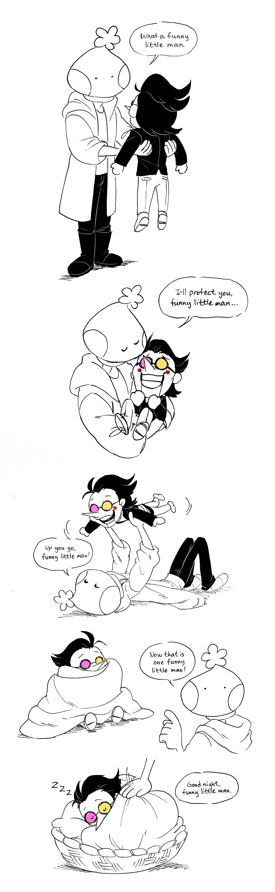
Description: "Bec, he has a name, you know."
"Indeed, he does! It's [[Funny Little Man]]."
Characters: Bechno Kid (persona), Spamton (Deltarune)
">
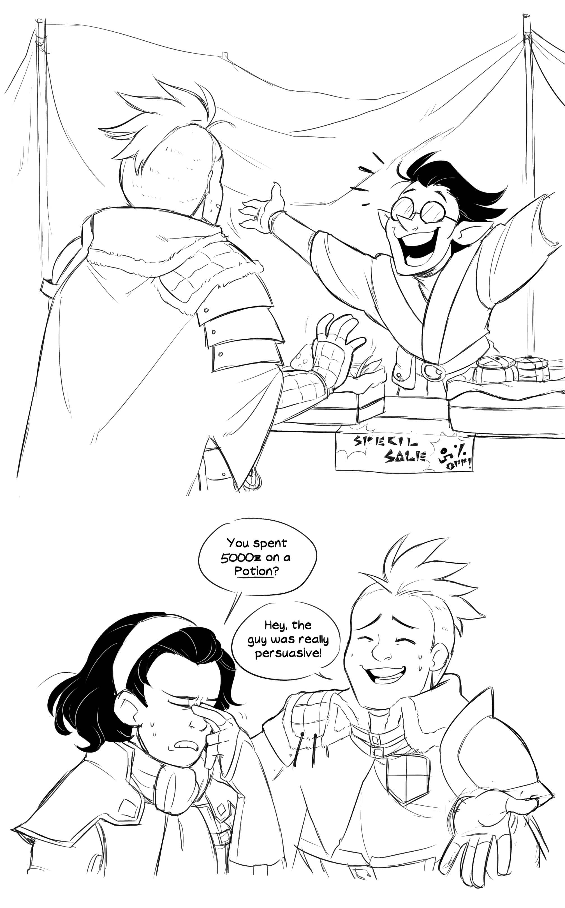
Description: Spamtober 2021, Day 8: Spamton. Of course I had to make a crossover. :3 For those who aren't familiar with Monster Hunter, potions usually sell for less than 100z.
Characters: Aiden/Excitable A-Lister, Lea/Serious Handler (Monster Hunter: World), Spamton (Deltarune Chapter 2)
">
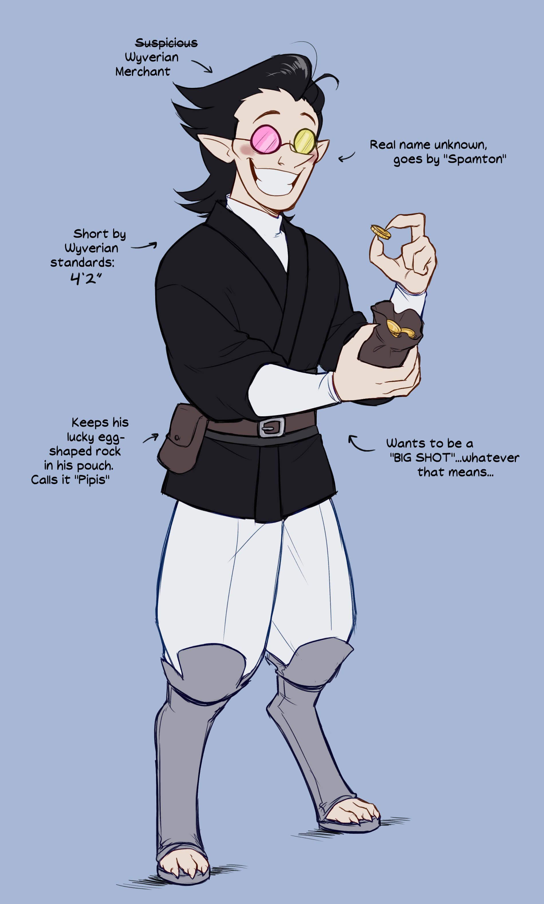
Description: Spamtober 2021, Day 9: Spamton. Doing some more with this crossover with Monster Hunter! :3 I've grown really attached to this funny little Wyverian man.<3
Character: Wyverian!Spamton (MH AU, Deltarune Chapter 2)
">
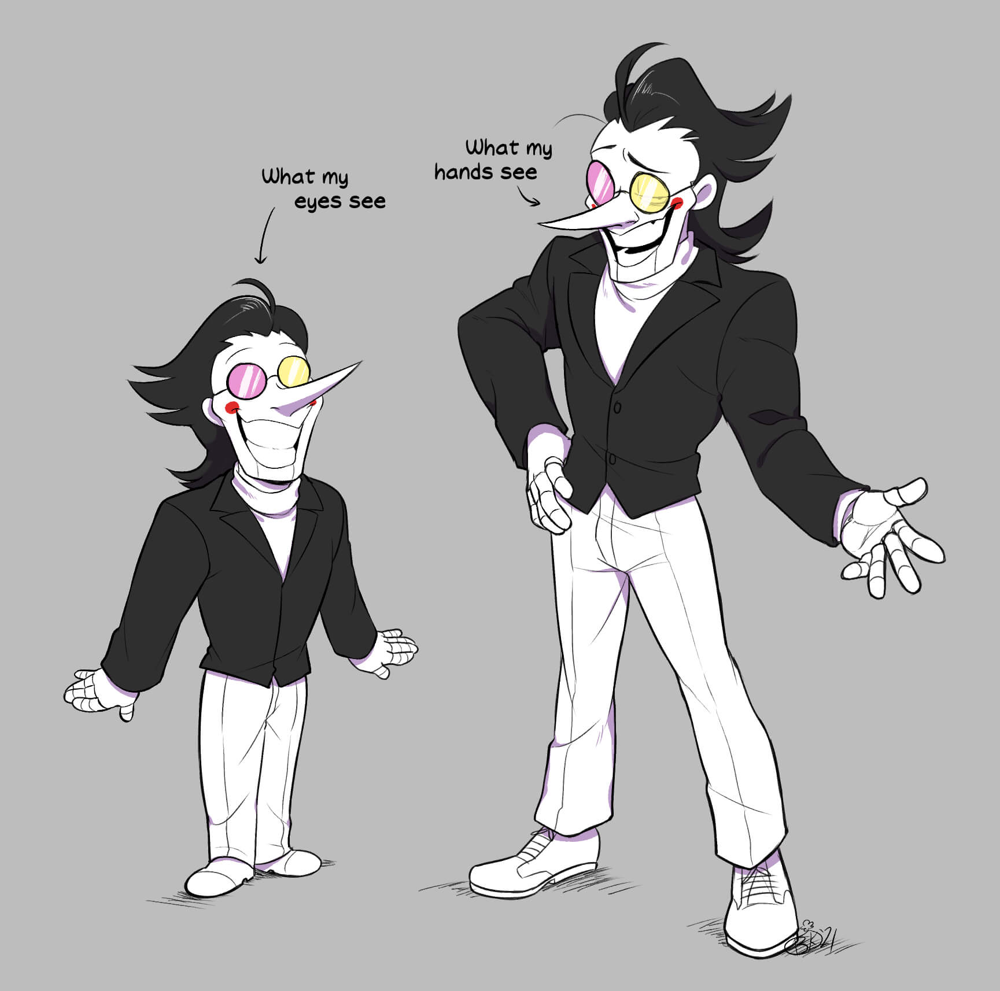
Description: Spamtober 2021, Day ???: Spamton (making up for previous days) Apparently, I have this curse that makes any character I draw unbelievably sexy. I have a hard time believing it, but here's proof, I guess?🤔
Character: Spamton (Deltarune Chapter 2)
">
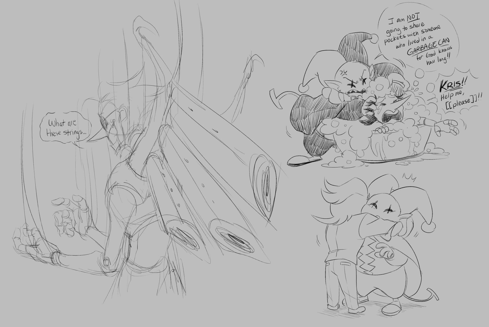Description: Spamtober 2021, Day 10: Spamton. I know everyone and their mother has drawn NEO but i just beat him and Jevil today so this is my way of celebrating x3
Characters: Spamton NEO, Spamton, Jevil (Deltarune Ch. 1 and 2)
">
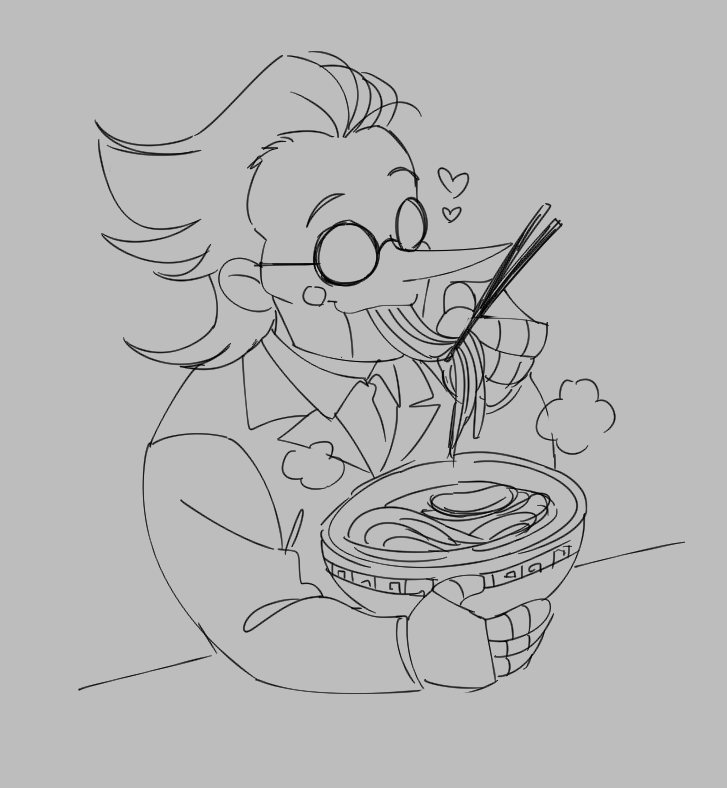
Description: Spamtober 2021, Day 11: Spamton. It's a simple one for today since I'm in the process of making a special comic! Please enjoy this one for now! He's eating phở. Can he eat? I'm just going to say that he can lol.
Character: Spamton (Deltarune Chapter 2)
">
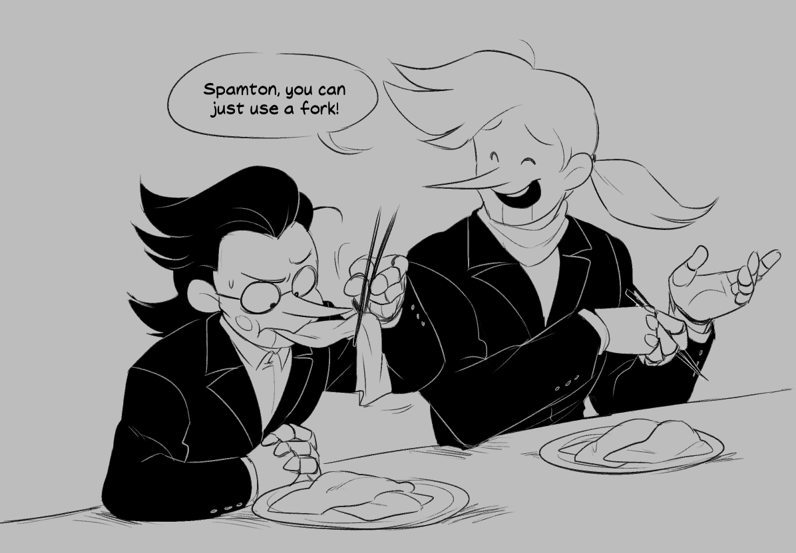
Description: Spamtober 2021, Day 14: Spamton. I always struggle eating bánh cuốn! So here's the funny little man having the same problem lmao
Characters: Spamton, Pink Addison (Deltarune Chapter 2)
">
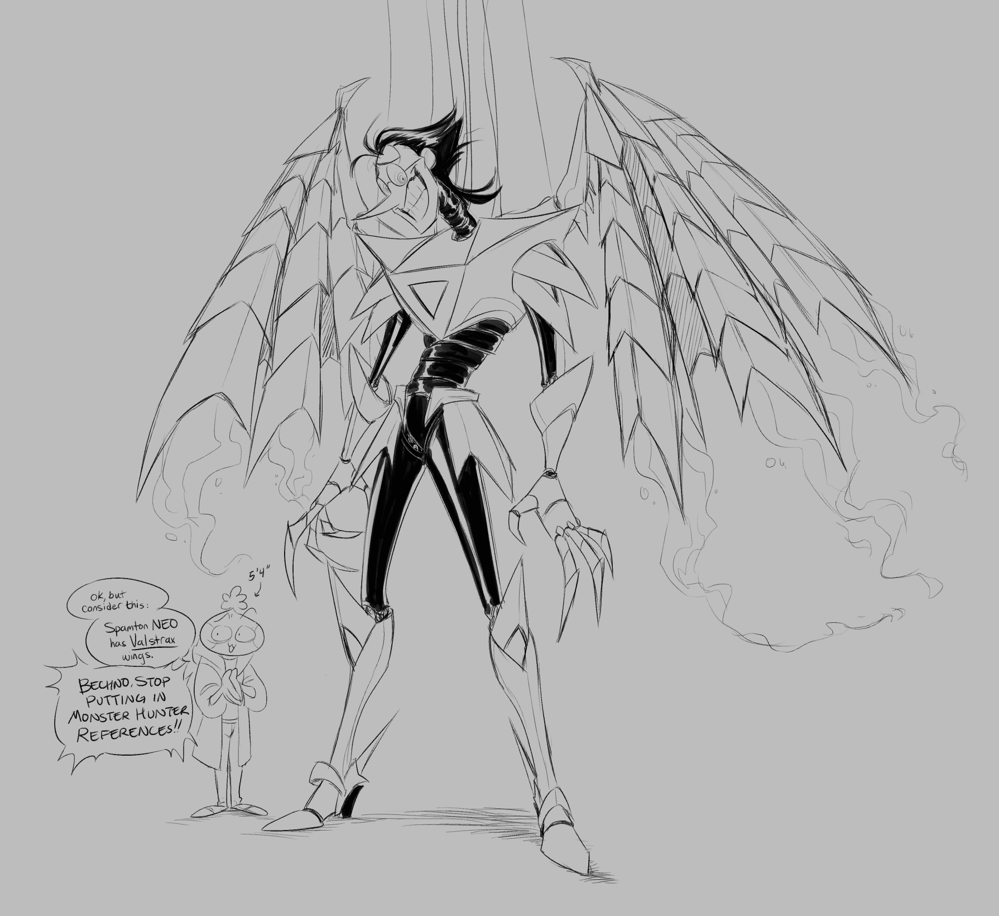
Description: Spamtober, Day 17: Spamton. H★8 Advanced: The Fallen Comet
Characters: Spamton NEO (Deltarune Chapter 2), Bechno Kid (persona)
">
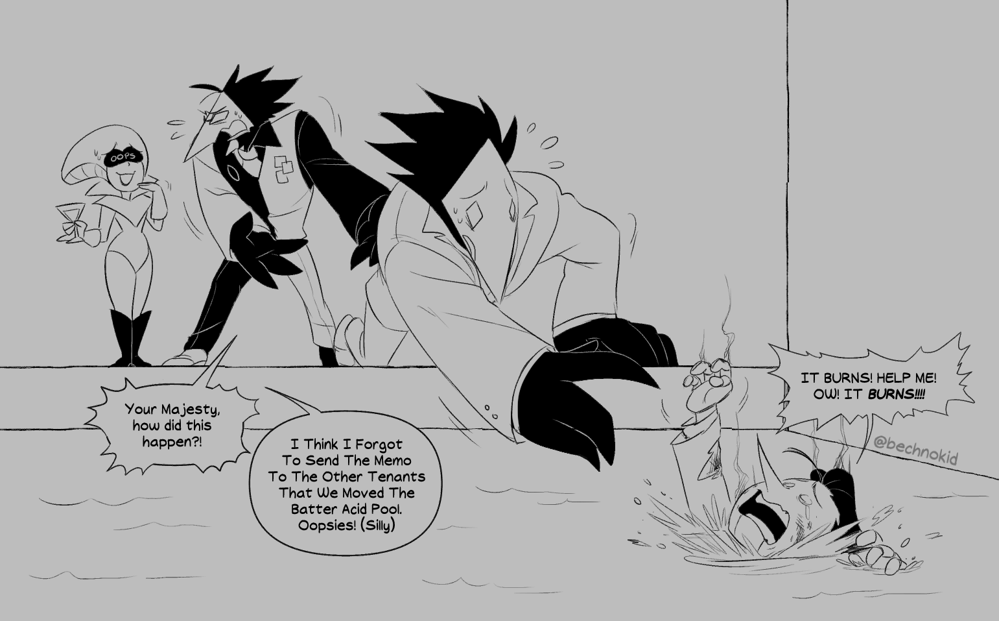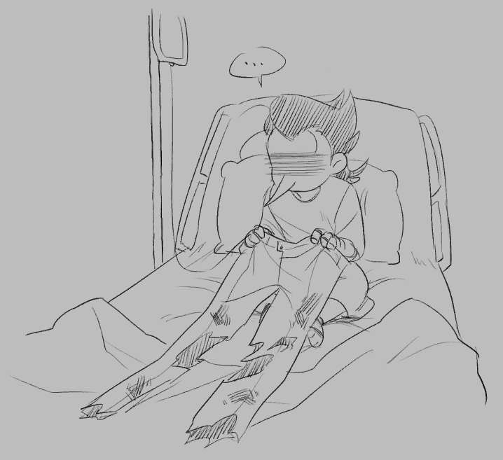
Description: Spamtober Day 20: Spamton. Alt. title: Spamton didn't watch where he was going
Characters: Spamton, Queen, Swatch, Swatchling (Deltarune Chapter 2)
">
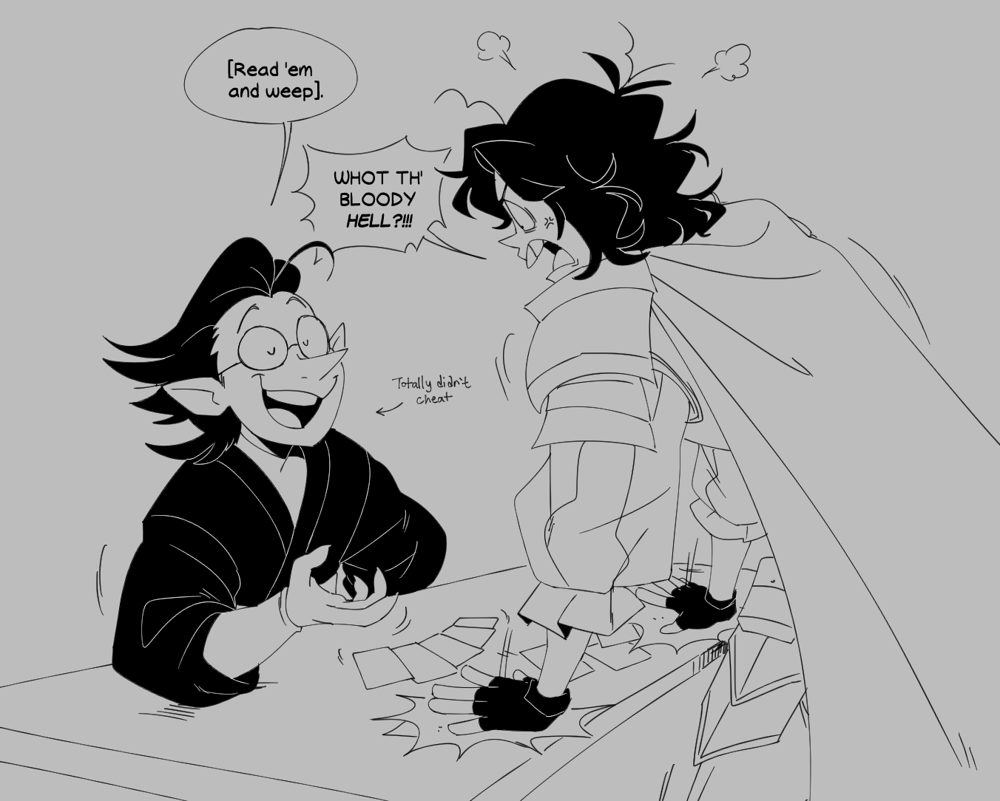
Description: Spamtober Day 23: Spamton. The beauty of having a Monster Hunter crossover? Having two characters from completely different games interacting with one another. :3
Characters: Wyverian!Spamton (Deltarune Chapter 2), Sir Daniel Fortesque (MediEvil)
">